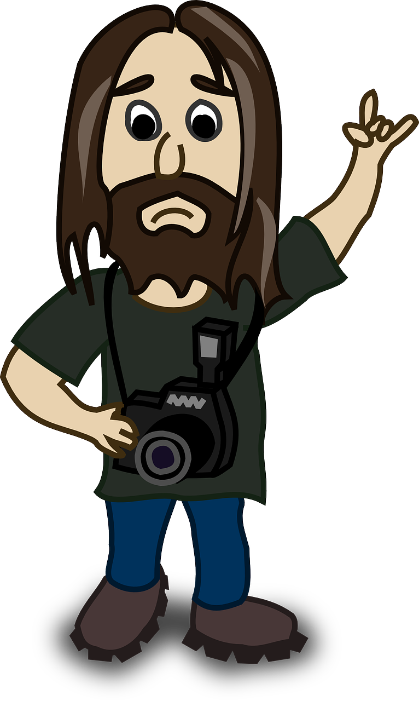

Instruction for the game
Bill is the photographer from Szczecin. He travels the world in search of incredible photo shots. Beal prefers the tried-and-true old technique, it makes for a special and lively photo. But this technique has a small disadvantage - it takes a long time to focus. You have to help Bill take pictures that will become world famous. Well, let's do it!

1.Click on the card to turn it upside down and thus see the future picture.
2.Great! Now we have to open the second card. If the images match, then we have caught the light correctly, stayed in focus, and our picture is ready. Otherwise (if the images don't match), our cards will flip back and the picture will be lost.
3.Try to clear the entire playing field in fewer moves, thereby saving time Bill, then he can get around more incredible places.